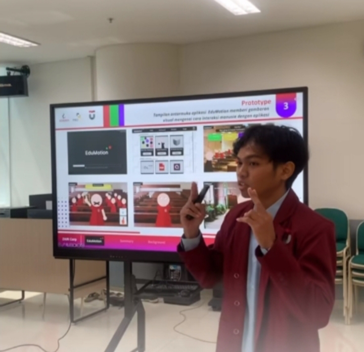

Photo caption: Writer presenting a business case proposal
[WRITER'S NOTE] I started my Data Science study in September 2022 with expected graduation date of 25th November 2026. During these college years, I met a lot of awesome, highly motivated individuals who inspired me to explore new things, keep learning, and never settle for knowing just enough. The environment I found myself in shaped me into a lifelong learner and someone who is always curious.
Those curiosities led me to a lot of experiments, which, more often than not, ended up as either a success or a failure. These uncertainties gave me a lot of experience and unexpectedly, projects to work on. Some projects and research i've been involved in during college include: Sentiment Analysis, Graph Network, Big Data Analysis, Computer Vision, Data Visualization, Data Mining, Forecasting, Mobile Apps, Interactive Web App, and so much more.
Other than that, i've also been trying to fit myself in a handful of organization and study groups, including: AIESEC, Data Science Association, Coding Camp, CCI, and so on.
By the end of my last semester, i kept a CGPA of 3.77 out of 4.00 the whole way through, earning the "with honor" distinction.